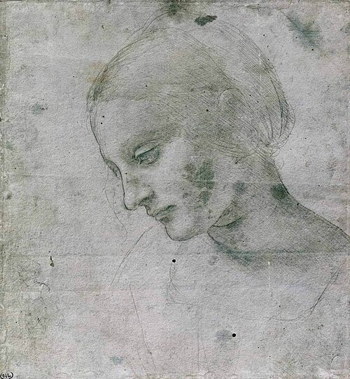
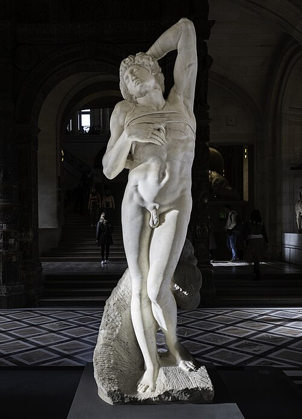
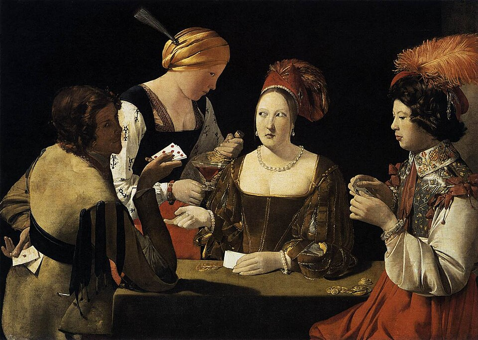
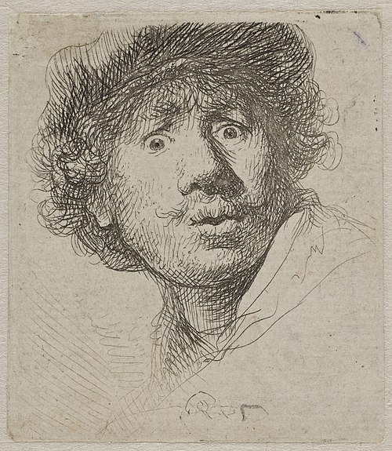
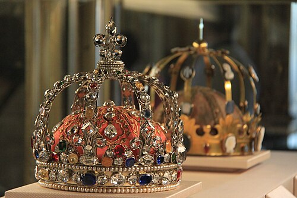

Head Effigy Bowl
A thousand years of churches, altarpieces, and — eventually — secular portraits, landscapes, and the individual human strangeness at the turn of the 20th century.


![Bifolium from a Bible: Initial E[t factum est] with Ezekiel](https://openaccess-cdn.clevelandart.org/1959.272/1959.272_print.jpg)








![Various Sketches of the Madonna and Child (recto); Architectural Studies (verso) [partially visible on recto]](https://openaccess-cdn.clevelandart.org/1939.670/1939.670_print.jpg)


![The Petitions [right part] from The Story of Artemisia](https://www.artic.edu/iiif/2/a597facd-9306-2729-d5b6-d63025ba5928/full/843,/0/default.jpg)
![The Feast [central part] from The Story of Artemisia](https://www.artic.edu/iiif/2/9df5b016-384e-60ba-15e6-391c92426647/full/843,/0/default.jpg)











![Volpini Suite: Old Women of Arles (Les Vieilles Filles [Arles])](https://openaccess-cdn.clevelandart.org/1954.55.11/1954.55.11_print.jpg)


![Crouching Tahitian Woman (related to the painting Nafea faa ipoipo [When Will You Marry?])](https://www.artic.edu/iiif/2/c54324cd-b9dd-c8ab-9034-94cf6f60a2e7/full/843,/0/default.jpg)